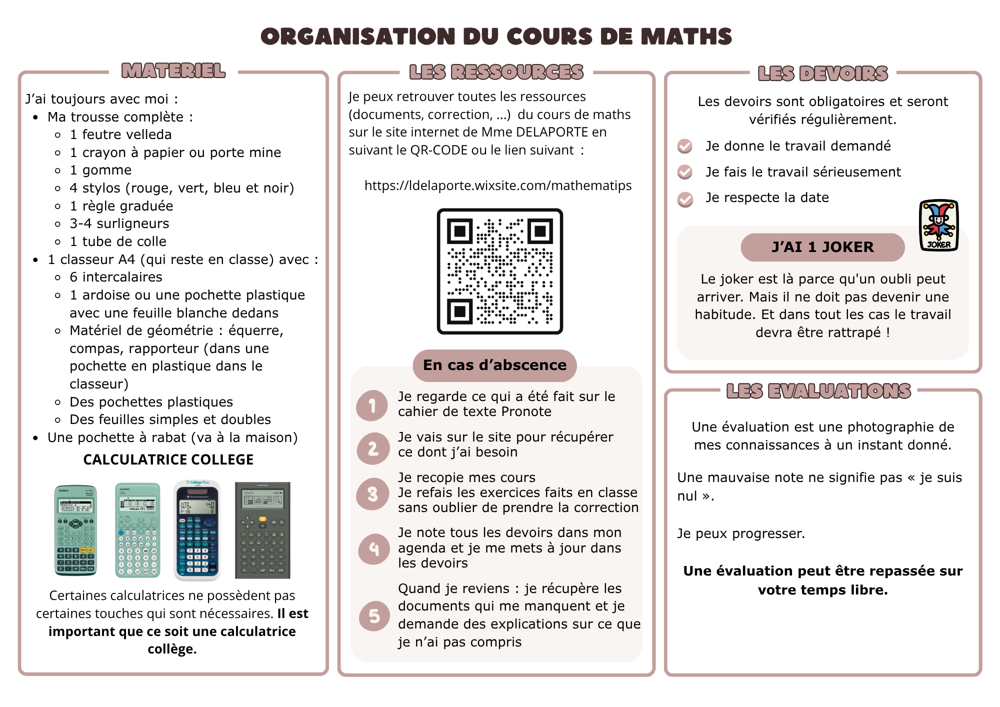
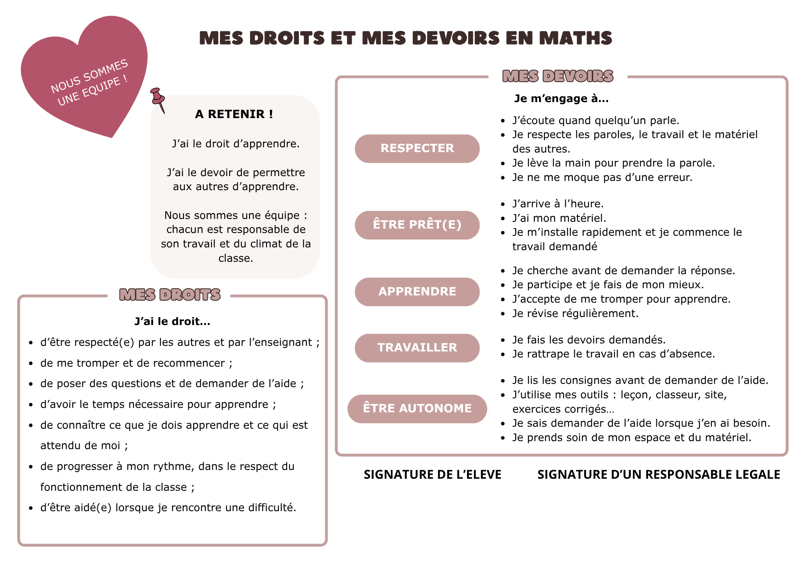
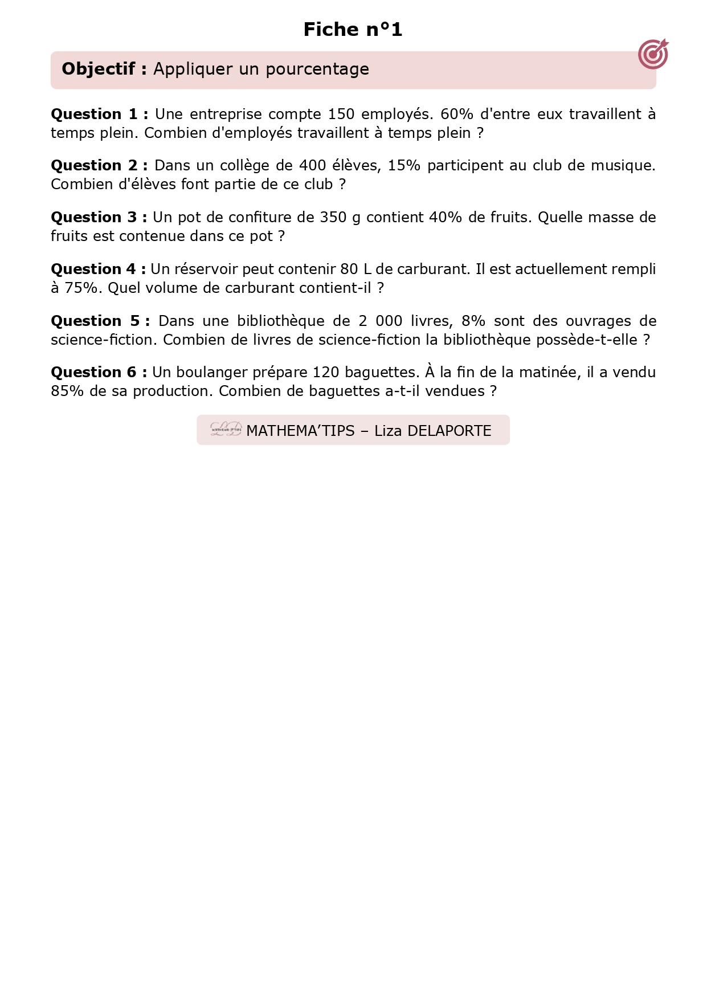

Mon classeur de 3ème
Organisation du cours de math


Auto'Tips
- Travailler les automatismes du programme
-

5 minutes au début de chaque séance - Onglet 1 du classeur
Choisis une série
Leçon
Cet Auto'Tips n'est pas encore disponible.
Séquences
- Séquence 1 : Calculer avec des fractions
- Séquence 2 : Calcul littéral 1
- Séquence 3 : Statistiques
- Séquence 4 : Puissances
- Séquence 5 : Pythagore
- Séquence 6 : Équation 1
- Séquence 7 : Probabilités
- Séquence 8 : Fonction
- Séquence 9 : Thalès
- Séquence 10 : Arithmétique
- Séquence 11 : Équation 2
- Séquence 12 : Trigonométrie
- Séquence 13 : Calcul littéral 2
- Séquence 14 : Transformation
- Séquence 15 : Fonctions linéaires et affines
- Séquence 16 : Espaces
- Séquence 17 : Repérage dans l'espace
Prépa DNB
Contenu à venir.
Devoir
Semaine 2

Évaluations
Contenu à venir.